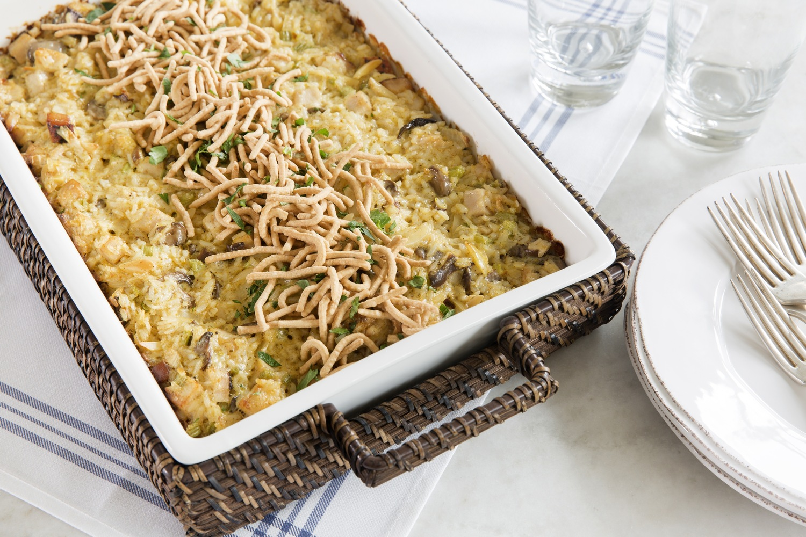

Turkey Crunch
Turkey Crunch

Description
A classic favorite, that is an easy one dish meal.
Ingredients
- 1 (20-oz) turkey tenderloins, cut into cubes
- 1 cup chopped celery
- 1 cup chopped onion
- 1 (10.75-oz) can cream of chicken soup
- 1 (8-oz) pkg sliced mushrooms
- 1 (2-oz) pkg slivered almonds
- 1 tsp salt, ½ tsp pepper
- 2 tsp curry
- 1 cup mayonnaise
- ½ cup milk
- 1½ cups uncooked long grain rice
- 1 (12-oz) can chow mein noodles
Steps
- Pre-oven to 350° F.
- Mix turkey, celery, onion, soup, mushrooms, almonds, salt, pepper, curry, mayonnaise and milk in a large mixing bowl.
- Pour into a lightly greased 13- x 9-inch casserole dish.
- Bake uncovered for 30 minutes.
- Cook rice according to package directions.
- Serve Turkey Crunch over hot rice and top with chow mein noodles.